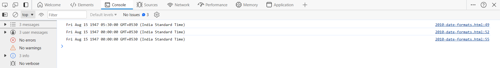
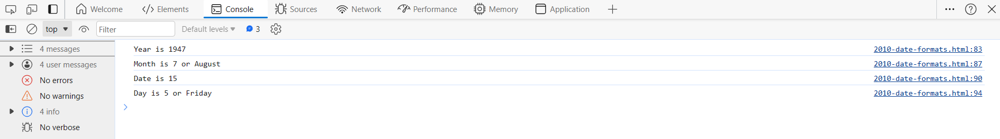

There are generally 3 types of JavaScript date input formats:
ISO 8601 is the international standard for the representation of dates and times.
The ISO 8601 syntax is YYYY-MM-DD.
Example: let d1 = new Date("1947-08-15");
Short dates are written with a syntax "MM/DD/YYYY".
Example: let d2 = new Date("08/15/1947");
Long dates are most often written with a syntax "MMM DD YYYY".
Example: let d3 = new Date("Aug 15 1947");

The getFullYear() method returns the year of a date as a four digit number.
Example:
let d4 = new Date("1947-08-15");
console.log("Year is " + d4.getFullYear());
The getMonth() method returns the month of a date as a number (0-11).
Example:
const months = ["January", "February", "March", "April", "May", "June", "July", "August", "September", "October", "November", "December"];
let d5 = new Date("08/15/1947");
console.log("Month is " + d5.getMonth() + " or " + months[d5.getMonth()]);
The getDate() method returns the day of a date as a number (1-31):
Example:
let d6 = new Date("Aug 15 1947");
console.log("Date is " + d6.getDate());
The getDay() method returns the weekday of a date as a number (0-6).
Example:
const days = ["Sunday", "Monday", "Tuesday", "Wednesday", "Thursday", "Friday", "Saturday"];
let d7 = new Date("1947-08-15");
console.log("Day is " + d7.getDay() + " or " + days[d7.getDay()]);
